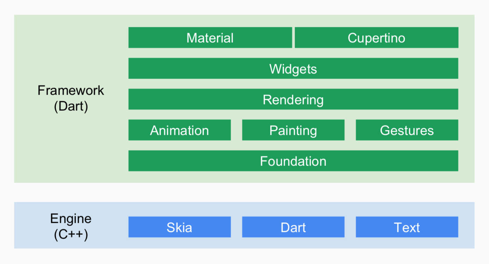
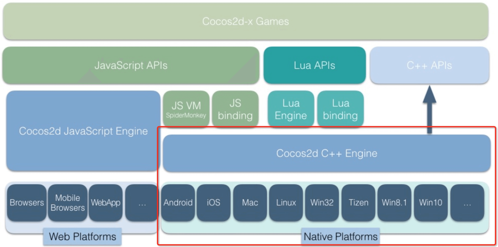
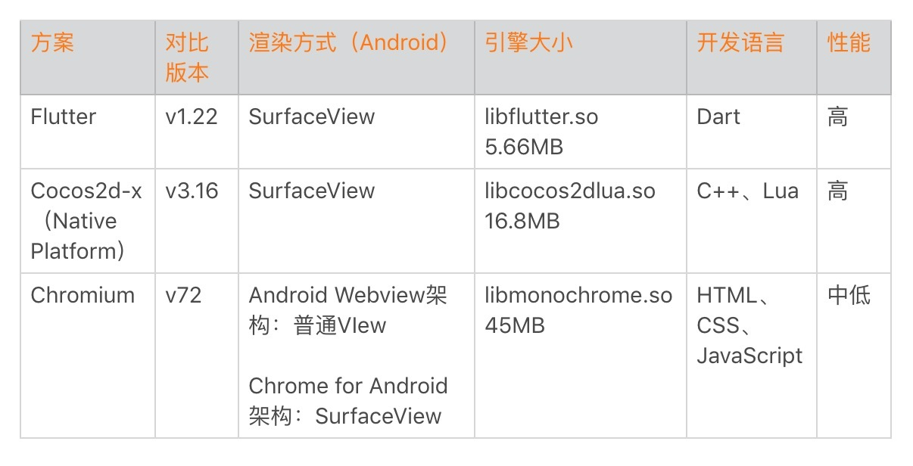
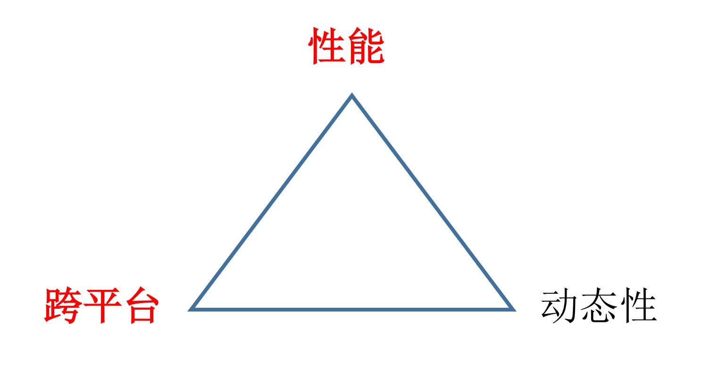
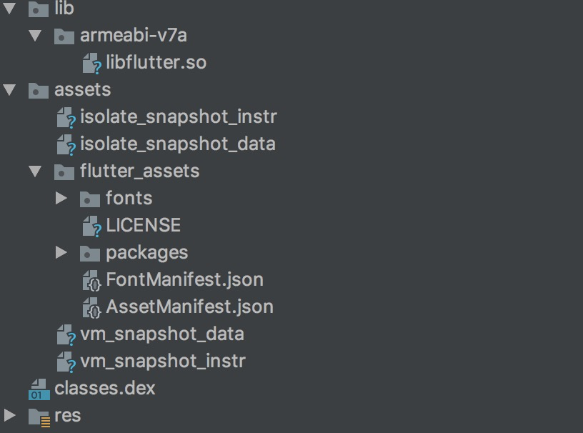
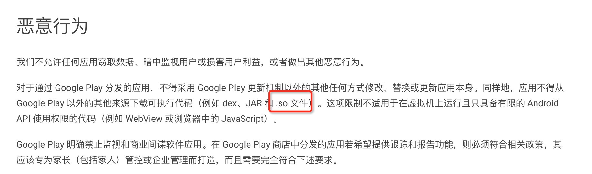
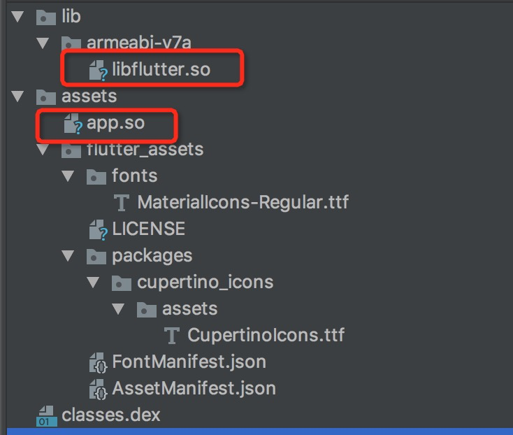
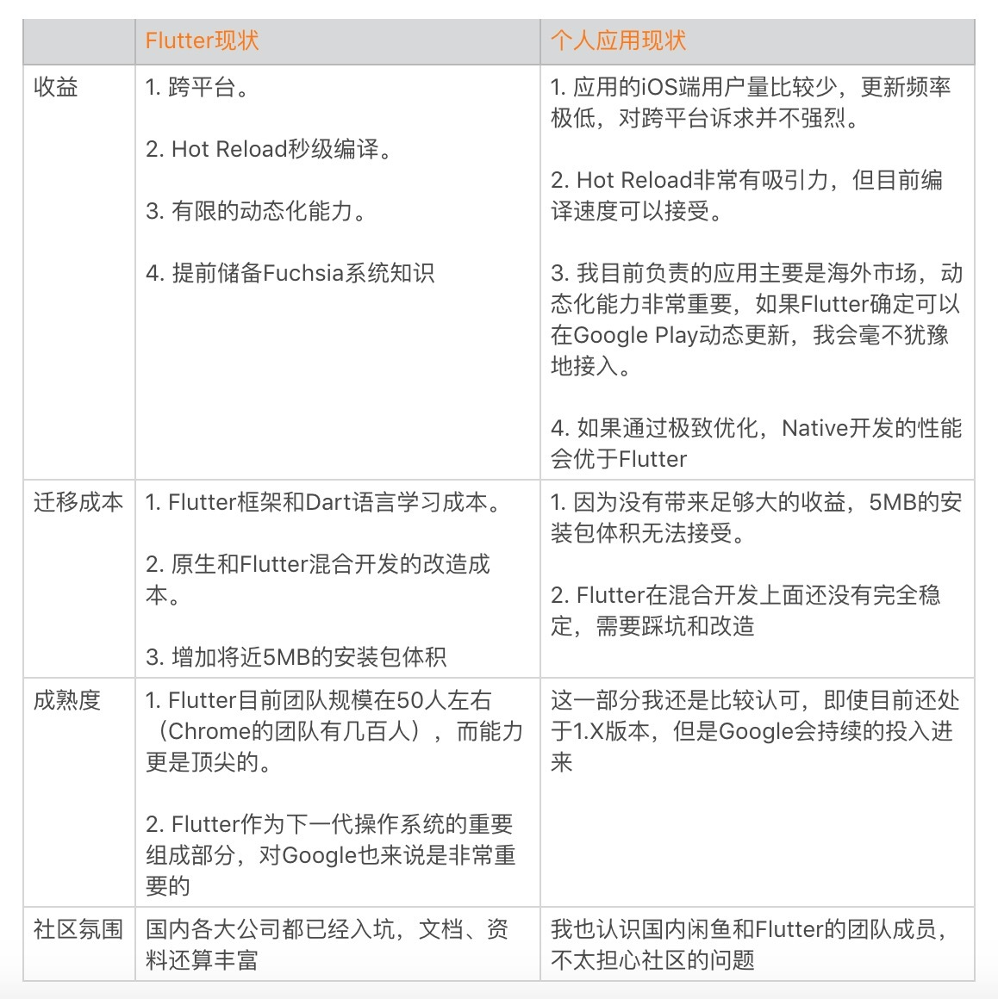
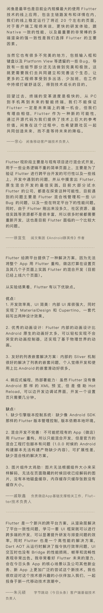

- 00 导读 如何打造高质量的应用？.md
- 00 开篇词 焦虑的移动开发者该如何破局？.md
- 01 崩溃优化（上）：关于“崩溃”那些事儿.md
- 02 崩溃优化（下）：应用崩溃了，你应该如何去分析？.md
- 03 内存优化（上）：4GB内存时代，再谈内存优化.md
- 04 内存优化（下）：内存优化这件事，应该从哪里着手？.md
- 05 卡顿优化（上）：你要掌握的卡顿分析方法.md
- 06 卡顿优化（下）：如何监控应用卡顿？.md
- 06补充篇 卡顿优化：卡顿现场与卡顿分析.md
- 07 启动优化（上）：从启动过程看启动速度优化.md
- 08 启动优化（下）：优化启动速度的进阶方法.md
- 09 I_O优化（上）：开发工程师必备的I_O优化知识.md
- 10 I_O优化（中）：不同I_O方式的使用场景是什么？.md
- 11 I_O优化（下）：如何监控线上I_O操作？.md
- 12 存储优化（上）：常见的数据存储方法有哪些？.md
- 13 存储优化（中）：如何优化数据存储？.md
- 14 存储优化（下）：数据库SQLite的使用和优化.md
- 15 网络优化（上）：移动开发工程师必备的网络优化知识.md
- 16 网络优化（中）：复杂多变的移动网络该如何优化？.md
- 17 网络优化（下）：大数据下网络该如何监控？.md
- 18 耗电优化（上）：从电量优化的演进看耗电分析.md
- 19 耗电优化（下）：耗电的优化方法与线上监控.md
- 20 UI 优化（上）：UI 渲染的几个关键概念.md
- 21 UI 优化（下）：如何优化 UI 渲染？.md
- 22 包体积优化（上）：如何减少安装包大小？.md
- 23 包体积优化（下）：资源优化的进阶实践.md
- 24 想成为Android高手，你需要先搞定这三个问题.md
- 25 如何提升组织与个人的研发效能？.md
- 26 关于编译，你需要了解什么？.md
- 27 编译插桩的三种方法：AspectJ、ASM、ReDex.md
- 28 大数据与AI，如何高效地测试？.md
- 29 从每月到每天，如何给版本发布提速？.md
- 30 数据评估（上）：如何实现高可用的上报组件？.md
- 31 数据评估（下）：什么是大数据平台？.md
- 32 线上疑难问题该如何排查和跟踪？.md
- 33 做一名有高度的移动开发工程师.md
- 34 聊聊重构：优秀的架构都是演进而来的.md
- 35 Native Hook 技术，天使还是魔鬼？.md
- 36 跨平台开发的现状与应用.md
- 37 移动开发新大陆：工作三年半，移动开发转型手游开发.md
- 38 移动开发新大陆：Android音视频开发.md
- 39 移动开发新大陆： 边缘智能计算的趋势.md
- 40 动态化实践，如何选择适合自己的方案？.md
- 41 聊聊Flutter，面对层出不穷的新技术该如何跟进？.md
- 42 Android开发高手课学习心得.md
- Android JVM TI机制详解（内含福利彩蛋）.md
- Android工程师的“面试指南”.md
- Native下如何获取调用栈？.md
- 专栏学得苦？可能你还需要一份配套学习书单.md
- 专栏学得苦？可能是方法没找对.md
- 程序员修炼之路 设计能力的提升途径.md
- 练习Sample跑起来 ASM插桩强化练习.md
- 练习Sample跑起来 唯鹿同学的练习手记 第1辑.md
- 练习Sample跑起来 唯鹿同学的练习手记 第2辑.md
- 练习Sample跑起来 唯鹿同学的练习手记 第3辑.md
- 练习Sample跑起来 热点问题答疑第1期.md
- 练习Sample跑起来 热点问题答疑第2期.md
- 练习Sample跑起来 热点问题答疑第3期.md
- 练习Sample跑起来 热点问题答疑第4期.md
- 结束语 移动开发的今天和明天.md
- 聊聊Framework的学习方法.md
41 聊聊Flutter，面对层出不穷的新技术该如何跟进？
“天下苦秦久矣”，不管是H5、React Native，还是过去两年火热的小程序，这些跨平台方案在性能和稳定性上总让我们诟病不已。最明显的例子是React Native已经发布几年了，却一直还处在Beta阶段。
Flutter作为今年最火热的移动开发新技术，从我们首次看到Beta测试版，到2018年12月的1.0正式版，总共才经过了9个多月。Flutter在保持原生性能的前提下实现了跨平台开发，而且更是成为Google下一代操作系统Fuchsia的UI框架，为移动技术的未来发展提供了非常大的想象空间。
高性能、跨平台，而且更是作为Google下一个操作系统的重要部分，Flutter已经有这么多光环加身，那我们是否应该立刻投身这个浪潮之中呢？新的技术、新的框架每一年都在不断涌现，我们又应该如何跟进呢？
Flutter的前世今生
大部分所谓的“新技术”最终都会被遗忘在历史的长河中，面对新技术，我们首先需要持怀疑态度，在决定是否跟进之前，你需要了解它的方方面面。下面我们就一起来看看Flutter的前世今生。
Flutter的早期开发者Eric Seidel曾经参加过一个访谈What is Flutter，在这个访谈中他谈到了当初为什么开发Flutter，以及Flutter的一些设计原则和方向。- -
Eric Seidel和Flutter早期的几位开发人员都是来自Chrome团队，他们在排版和渲染方面具有非常丰富的经验。那为什么要去开发Flutter？一直以来他们都为浏览器的性能而感到沮丧，有一天他们决定跳出Web的范畴，在Chromium基础上通过删除大量的代码，抛弃Web的兼容性，竟然发现性能是之前的20倍。对此我也深有感触，最近半年也一直在做主App的Lite版本，安装包也从42MB降到8MB，通过删除大量的历史业务，性能比主包要好太多太多。
正如访谈中所说，Flutter是一个Google内部孵化多年的产品，从它开发之初到现在，一直秉承着两个最重要的设计原则：
性能至上。内置布局和渲染引擎，使用Skia通过GPU做光栅化。选择Dart语言作为开发语言，在发布正式版本时使用AOT编译，不再需要通过解析器解释执行或者JIT。并且支持Tree Shaking无用代码删除，减少发布包的体积。
效率至上。在开发阶段支持代码的Hot Reload，实现秒级编译更新。重视开发工具链，从开发、调试、测试、性能分析都有完善的工具。内置Runtime实现真正的跨平台，一套代码可以同时生成Android/iOS应用，降低开发成本。
那为什么要选择Dart语言？“Dart团队办公室离Flutter团队最近”肯定是其中的一个原因，但是Dart也为Flutter追求性能和效率的道路提供了大量的帮助，比如AOT编译、Tree Shaking、Hot Reload、多生代无锁垃圾回收等。正因为这些特性，Flutter在筛选了多种语言后，最终选择了Dart。这里也推荐你阅读Why Flutter Uses Dart这篇文章。
总的来说，Flutter内置了布局和渲染引擎，使用Dart作为开发语言，采用React方式编写UI，支持一套代码在多端运行的框架。但是正如专栏前面所说的，大前端时代的核心诉求是跨平台和动态化，下面我们就一起来看看Flutter在这两方面的表现。
1. Flutter的跨平台开发
虽然React Native/Weex使用了系统原生UI组件，通过原生渲染的方式来提升渲染速度和UI流畅度，但是因为JS执行效率、JSBridge的通信代价等因素，性能依然存在瓶颈，而且我们也无法抹平不同系统的平台差异，因此这样的跨平台方案注定艰难。

正如Eric Seidel在访谈所说，Flutter是从浏览器引擎简化而来，无论是它的布局引擎（例如也是使用CSS Flexbox布局），还是渲染流水线的设计，都跟浏览器都有很多相似之处。但是它抛弃了浏览器沉重的历史包袱和Web的兼容性，实现了在保持性能的前提下的跨平台开发。
回想一下在专栏第37期《工作三年半，移动开发转型手游开发》中，我们还描述过另外一套内置Runtime的跨平台方案：Cocos引擎。

在我看来，Cocos和Unity这些游戏引擎才是最早并且成熟的跨平台框架，它们对性能的要求也更加苛刻。即使是“王者荣耀”和“吃鸡”这么复杂的游戏，我们也可以做得非常流畅。
Flutter和游戏引擎一样，也提供了一套自绘界面的UI Toolkit。游戏引擎虽然能实现跨平台开发，但它致力于服务更有“钱途”的游戏开发。游戏引擎对于App开发，特别是混合开发支持并不完善。
如下图所示，我们可以看到三种跨平台方案的对比，Flutter可以说是三者中最为轻量的。

2. Flutter的动态化实践
在专栏第40期《动态化实践，如何选择适合自己的方案》中，我提到了一个观点：“相比跨平台能力，国内对大前端的动态化能力更加偏执”。
在性能、跨平台、动态性这个“铁三角”中，我们不能同时将三个都做到最优。如果Flutter在性能、跨平台和动态性都比浏览器更好，那就不会出现Flutter这个框架了，而是成为Chromium的一个跨时代版本。

浏览器选择的是跨平台和动态性，而Flutter选择的就是性能和跨平台。Flutter正是牺牲了Web的动态性，使用Dart语言的AOT编译，使用只有5MB的轻量级引擎，才能实现浏览器做不到的高性能。Flutter的第一波受众是Android上使用Java、Kotlin，iOS上使用Objective-C、Swift的Native开发。未来Flutter是否能以此为突破口，进一步蚕食Web领域的份额，现在还不得而知。
那Flutter是否支持动态更新呢？由于编译成AOT代码，在iOS是绝对不可以动态更新的。对于Android，Flutter的动态更新能力其实Tinker就已经实现了。从官方的提供方案来看，其实也只是替换下面的变化文件，可以说是Tinker的简化版。

官方的动态修复方案可以说是非常鸡肋的，并且也是要求应用重启才能生效。如果同时修改了Native代码，这也是不支持的。
更进一步说，Flutter在Google Play上是否允许动态更新也是抱有疑问的。从Google Play上面的开发者政策中心规定上看，在Google Play也是不允许动态更新可执行文件。

从《从Flutter的编译模式》一文中，我们可以通过flutter build apk --build-shared-library将Dart代码编译成app.so。无论是libflutter.so，还是app.so（其实vm_*、isolate_*也是可执行文件）的动态更新，都违反了Google Play的政策。

当然不排除Google为了推广Flutter，为它的动态更新开绿灯。最近我也在咨询Google Play的政策组，目前还没有收到答复，如果后续有进一步的结果，我也可以同步给各位同学。
总的来说，Flutter的动态化能力理论上只能通过JIT编译模式解决，但是这会带来性能和代码体积的巨大影响。当然，闲鱼也在探索一套Flutter的布局动态化方案，你可以参考文章《Flutter动态化的方案对比及最佳实现》。
面对新技术，该如何选择
通过上面的学习，我们总算对Flutter的方方面面都有所了解。可以说Flutter是一个性能和效率至上，但是动态化能力非常有限的框架。
目前闲鱼App、美团外卖、今日头条App、爱奇艺开播助手、网易新闻客户端、京东JDFlutter、马蜂窝旅游App，都分享过他们在使用Flutter的一些心得体会。如果有兴趣接入Flutter，非常推荐你认真看看前人的经验和教训。
无论是Flutter，还是其他新的技术，在抉择是否跟进的时候，我们需要考虑以下一些因素：
收益。接入新的技术或者框架，给我们带来什么收益，例如稳定性、性能、效率、安全性等方面的提升。
迁移成本。如果想得到新技术带来的收益，需要我们付出什么代价，例如新技术的学习成本、原来架构的改造成本等。
成熟度。简单来说，就是这个新技术是否靠谱。跟选择开源项目一样，团队规模、能力是否达标、对项目是否重视都是我们需要考虑的因素。
社区氛围。主要是看跟进这个技术的人够不够多、文档资料是否丰富、遇到问题能否得到帮助等。
1. 对于Flutter，我是怎么看的
Flutter是一个非常有前景的技术，这一点是毋庸置疑的。我曾经专门做过一次全面的评估分析，但是得出的结论是暂时不会在我负责的应用中接入，主要原因如下。

目前我还没有跟进Flutter的核心原因在于收益不够巨大，如果有足够大的收益，其他几个因素都不是问题。而我负责的应用目前使用H5、小程序作为跨平台和动态化方案，通过极致优化后性能基本可以符合要求。
从另外一方面来说，新技术的学习和引入，无论是对历史代码、架构，还是我们个人的知识体系，都是一次非常好的重构机会。我非常希望每过一段时间，可以引入一些新的东西，打破大家对现有架构的不满。
新的技术或多或少有很多不完善的地方，这是挑战，也是机会。通过克服一个又一个的困难和挑战，并且在过程中不断地总结和沉淀，我们最终可能还收获了团队成员技术和其他能力的成长。以闲鱼为例，他们在Flutter落地的同时，不仅将他们的经验总结成几十篇非常高质量的文章，而且也参加了QCon、GMTC等一些技术大会，同时开源了fish-redux、FlutterBoost等几个开源库，Flutter也一下成为了闲鱼的技术品牌。
可以相信，在过去一年，闲鱼团队在共同攻坚Flutter一个又一个难题的过程中，无论是团队的士气还是团队技术和非技术上的能力，都会有非常大的进步。
2. 对于Flutter，大家又是怎么看的
由于我还并没有在实际项目中使用Flutter，所以在写今天的文章之前，我也请教了很多有实际应用经验的朋友，下面我们一起来看看他们对Flutter又是怎么看的。

总结
曾几何时，我们一直对Chromium庞大的代码无从入手。而Flutter是一个完整而且比WebKit简单很多的引擎，它内部涉及从CPU到GPU，从上层到硬件的一系列知识，源码中有非常多值得我们挖掘去学习和研究的地方。
未来Flutter应用在小程序中也是一个非常有趣的课题，我们可以直接使用或者参考Flutter实现一个小程序渲染引擎。这样还可以带来另外一个好处，一个功能（例如微信的“附近的餐厅”）在不成熟的时候可以先以小程序的方式尝试，等到这个功能稳定之后，我们又可以无成本地转化为应用内的代码。
Dart语言从2011年启动以来，一直想以高性能为卖点，试图取代JavaScript，但是长期以来在Google外部使用得并不多。那在Flutter这个契机下，它未来是否可以实现弯道超车呢？这件事给我最大的感触是，机会可能随时会出现，但是需要我们时刻准备好。
“打铁还需自身硬”，我们还是要坚持修炼内功。对于是否要学习Flutter，我的答案是“多说无益，实践至上”。
课后作业
对于Flutter，你有什么看法？你是否准备在你的应用中跟进？欢迎留言跟我和其他同学一起讨论。
Flutter作为今年最为火热的技术，里面有非常多的机遇，可以帮我们打造自己的技术品牌（例如撰写文章、参加技术会议、开源你的项目等）。对于Flutter的学习，你可以参考下面的一些资料。
万物之中，源码最美
各大应用的使用总结：闲鱼App、美团外卖、今日头条App、爱奇艺开播助手、网易新闻客户端、京东JDFlutter、马蜂窝旅游App
阿里Flutter开发者帮助App：flutter-go
欢迎你点击“请朋友读”，把今天的内容分享给好友，邀请他一起学习。我也为认真思考、积极分享的同学准备了丰厚的“学习加油礼包”，期待与你一起切磋进步哦。
© 2019 - 2023 Liangliang Lee. Powered by gin and hexo-theme-book.